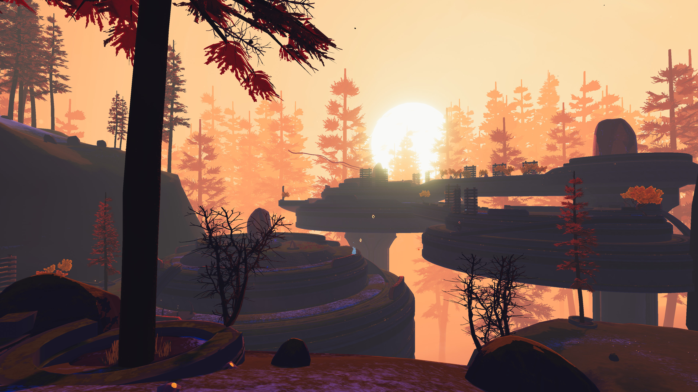
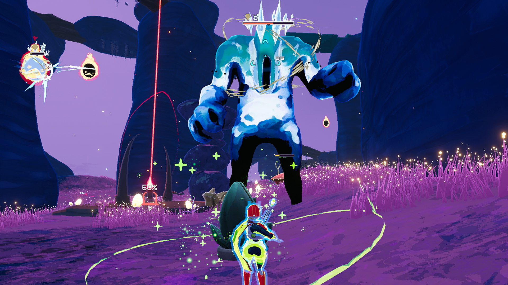
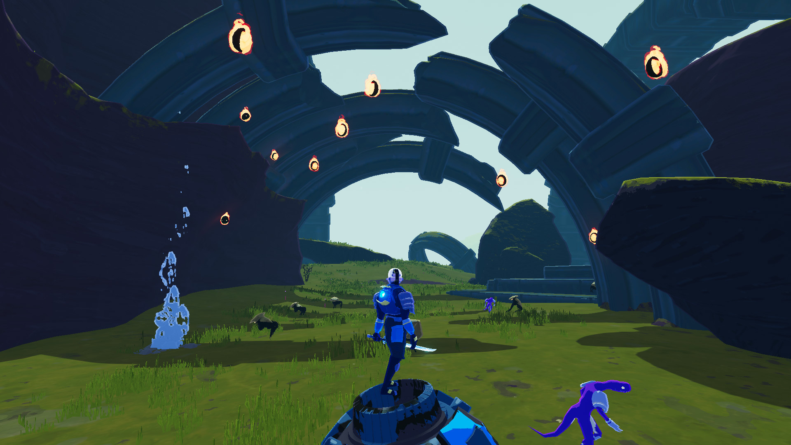
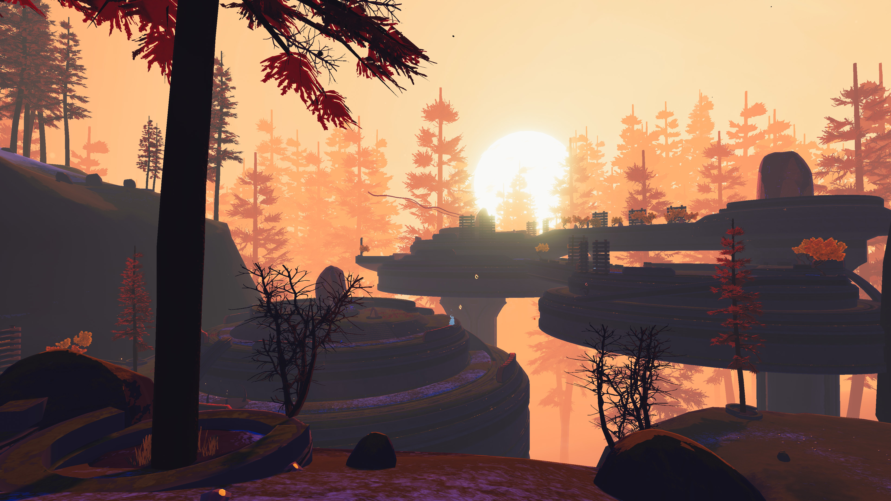
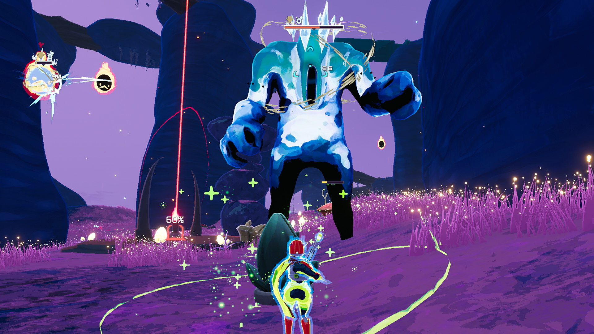
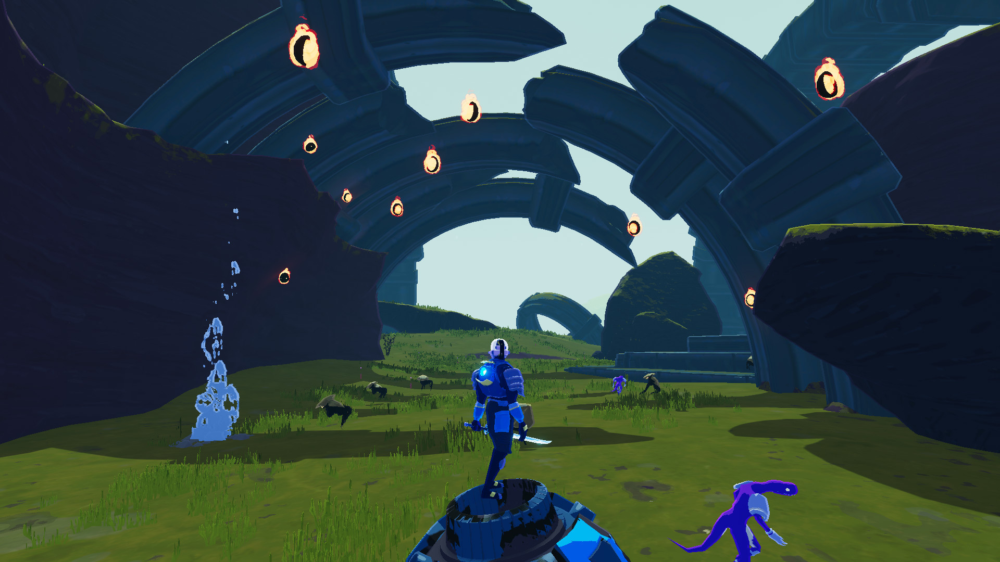

Risk of Rain 2
De klassieke multiplayergame Risk of Rain is terug, met de kenmerkende roguelike-gameplay, een extra dimensie en uitdagende actie. Speel alleen of in een team van maximaal vier vrienden en baan je een weg door horden monsters, speel beloningen vrij en ontsnap van de planeet.
Rating: *****
Single player
Online multiplayer
Genre: Actie, Indie Ontwikkelaar: Hopoo Games Uitgavedatum: 11 aug 2020
 





Systeemeisen
- Besturingssysteem: Windows 7 or newer, 64-bit
- Processor: Intel Core i3-6100 / AMD FX-8350
- Geheugen: 4 GB RAM
- Grafische kaart: GTX 580 / AMD HD 7870
- DirectX: Versie 11
- Netwerk: Breedband-internetverbinding
- Opslagruimte: 4 GB beschikbare ruimte
recenties
- “Risk of Rain 2’s early access hooked me with its fluid 3D action and distinct classes, and held my attention long after I’d seen everything it had to offer with its berserk roguelike progression, and the ability to squad up with friends.”
- - IGN
- “Few sequels have so successfully amplified the strengths of their predecessors, and in the case of developer Hopoo Games, few studios have so firmly grasped what made their earlier work great. Risk of Rain 2 is a raucous, clever, and exceedingly weird sequel. It is also thrilling and remarkable — not merely because it improves on what came before, but because it recontextualizes a formula that was already brilliant to begin with.”
- - Polygon